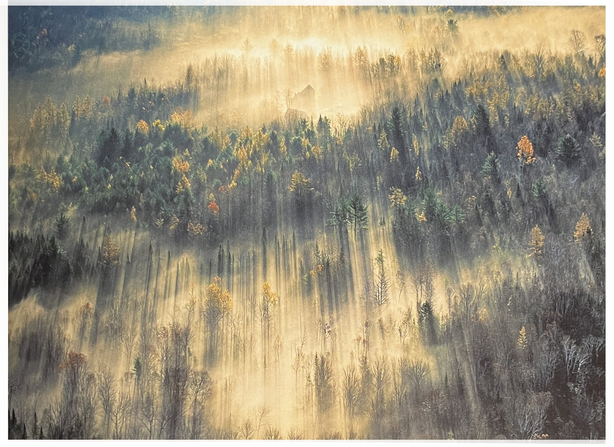
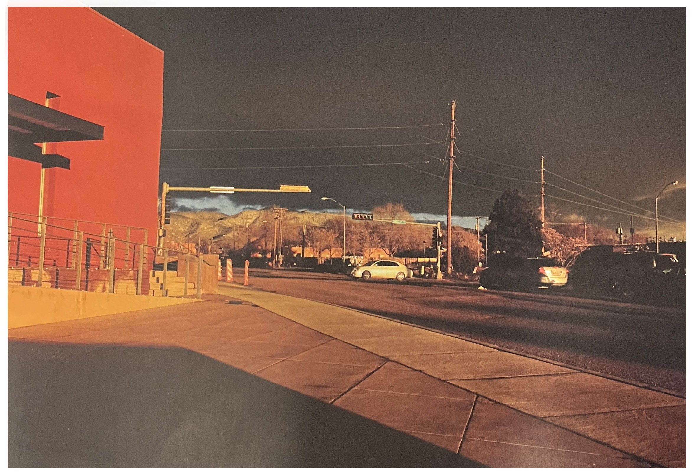
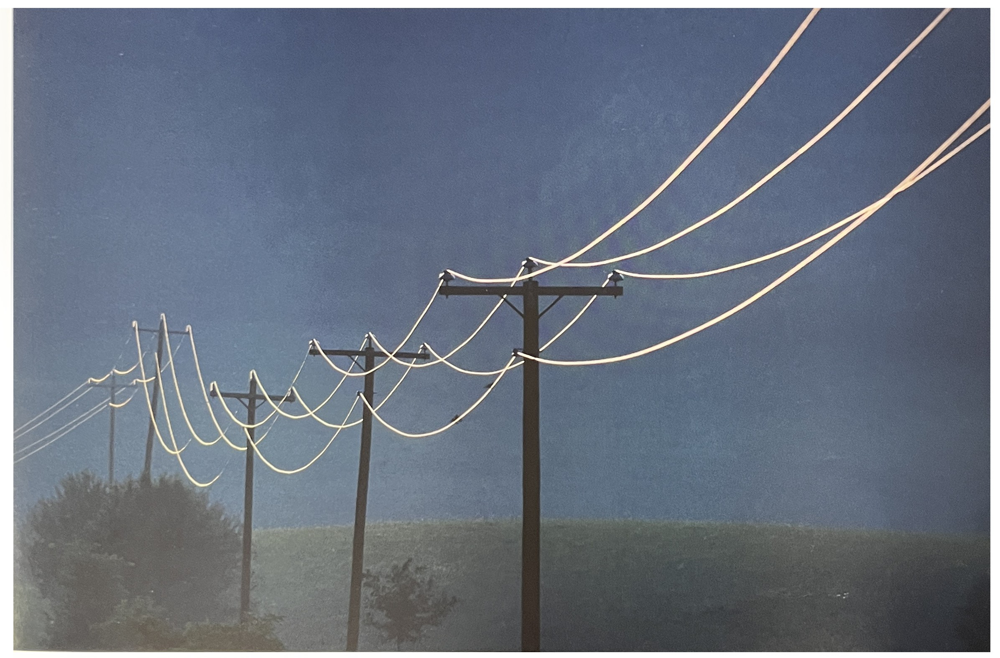
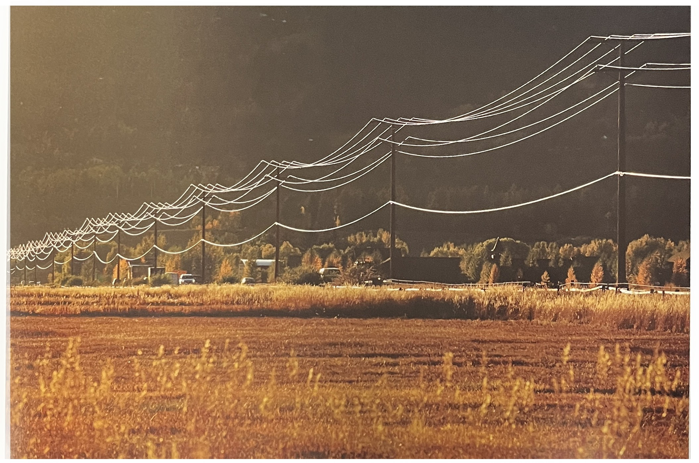

동이 틀 무렵, 헬리콥터를 타고 메인 주의 하늘을 날아가다 이 광경을 본 나는 흥분을 넘어 황홀경에 빠졌다. 그리고 동시에 반대편에서 바라보는 것은 어떨지 호기심이 일었다. 하지만 문제는 당신이 지금 보고 있는 그것을 찍어야 한다는 것이다. 다음을 기약하지 마라. 그래서 나는 이 사진을 찍은 후에도 반대쪽을 찍기 위해 주위를 계속 맴돌았다. 그리고 다시 이 방향으로 돌아와 사진을 찍으려고 했더니 좀 전의 그 멋진 빛은 이미 사라지고 없었다.
그래도 반대쪽을 볼 수 있었던 것은 참 다행이었다. 마치 사진작가로서의 의무를 다한 것 같았다. 하지만 다시 돌아왔을 때는 당신이 전에 봤던 그 장면은 없다. 그러니 항상 지금 보고 있는것을 찍도록 하자.
당신은 결코 보통의 연극 무대를 바라보고 있는 관객처럼 굴어서는 안된다. 모든 방향에서 볼 수 있는 원형극장에 있다고 여겨야 한다.
메인의 나무
맥락[1]조명이 침침한 갤러리 안에서 시간을 보내고 밖으로 걸어 나오다가 우연히 이 굉장한 장면을 보게 되었다. 우리가 경험하는 것들은 항상 대비와 맥락의 문제에 기인한다. 그리고 우리가 지금 바라보고 있는 것뿐만아니라 우리를 열광하게 만드는 맥락 속에서만 이를 경험할 수 있다.
때때로 우리를 감동시키는 모든 것의 결여는 우리가 마지막에 보게 되는 아름다운 결말의 감동을 극대화시킨다. 우리는 이러한 정체기들의 끝없는 무無가 우리에게 무엇을 준비하게 하고, 또 이런 '발견의 순간'에 감사하게 만드는지 이해하지 못한다. 어떤 면에서 보면 이것은 당신이 멍하게 있을때 땡땡땡!하고 경종을 울리는 것과 같다.
산타페의 적과 흑
신선한 것[1]지금 나는 빛을 향해 달리지만 태양을 정면으로 맞닥뜨리지 않고, 다만 그의 동태를 살핀다. 전봇대는 역광을 받아 검게 보이지만 전깃줄은 신비롭게도 빛을 받아 환하게 반짝였다.
누군가 내개 묻는다. "조명을 어떻게 한 거죠?"
나는 그렇게 대단하지 못하다.
빛이 한 일일 뿐.

전깃줄
당신의 열정을 자극하는 일이라면 계속하라[1]앞의 사진에서 전깃줄이 잘 표현되었다.
그렇다면 "더 많은 전깃줄은 어떤 모습일까" 하는 호기심이 생겼다. 그래서 나는 이 작업을 수년간 계속해왔다.
그러나 이건 계획된 '일'이 아나었다. 나는 그저 무언가 내 열정을 자극할 때는 다시 처음으로 돌아가 더 나은 결과물을 생각하며 다시, 또 다시 시도할 뿐이다. 그렇게 앞페이지에서 이번 페이지로 한 장을 넘기는데 못해도 50년의 세월을 보내야 했다.
전깃줄2
[참고문헌]
[1]빛, 제스처, 그리고 색light, gesture & color, 제이 마이젤 지음, 박윤혜 옮김, 시그마북스, 2015.3.2
....
....
....
....
....